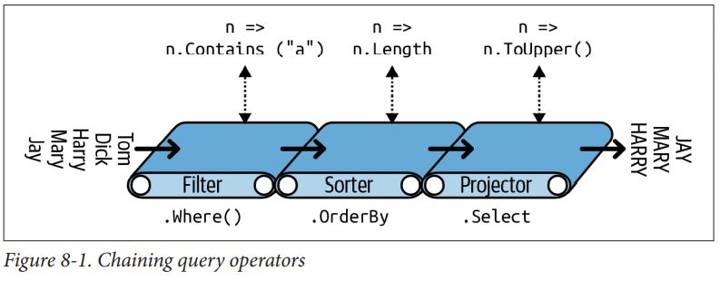

# LINQ 查询
LINQ 是 Language-Integrate Query 的缩写，它可以视为一组语言和框架特性的集合。LINQ 可以对本地对象集合或远程数据源进行结构化的类型安全的查询操作。
# 入门
LINQ 数据的基本组成部分是序列和元素。序列是任何实现了 IEnumerable<T> 接口的对象，而其中的每一项称为一个元素。
System.Linq 命名空间的 Enumerable 类中定义了约 40 种查询运算符。这些运算符是以静态扩展方法的形式来实现的，称为标准查询运算符。
对本地序列进行的查询操作称为本地查询或 LINQ-to-objects 查询。
LINQ 还支持对哪些从远程数据库（例如 SQL Server 数据库）种动态获取的序列进行查询。这些序列需要实现 IQueryable<T> 接口。
string[] names = { "Tom", "Dick", "Harry" }; | |
IEnumerable<string> filteredNames = System.Linq.Enumerable.Where | |
(names, n => n.Length >= 4); | |
foreach (string n in filteredNames) | |
Console.WriteLine (n); | |
OUTPUT: | |
Dick | |
Harry |
或者以下面这种方式调用（需要导入 System.Linq 命名空间）：
IEnumerable<string> filteredNames = names.Where (n => n.Length >= 4); |
# 流式语法
# 查询运算符链
using System; | |
using System.Collections.Generic; | |
using System.Linq; | |
class LinqDemo | |
{ | |
static void Main() | |
{ | |
string[] names = { "Tom", "Dick", "Harry", "Mary", "Jay" }; | |
IEnumerable<string> query = names | |
.Where (n => n.Contains ("a")) | |
.OrderBy (n => n.Length) | |
.Select (n => n.ToUpper()); | |
foreach (string name in query) Console.WriteLine (name); | |
} | |
} | |
OUTPUT: | |
JAY | |
MARY | |
HARRY |
查询运算符绝不会修改输入序列，相反，它会返回一个新序列。这种设计是符合函数式编程规范的，而 LINQ 就是起源自函数式编程。
以下是三种查询运算符所对应的扩展方法的签名（OrderBy 的签名稍稍进行了简化）：
public static IEnumerable<TSource> Where<TSource> | |
(this IEnumerable<TSource> source, Func<TSource,bool> predicate) | |
public static IEnumerable<TSource> OrderBy<TSource,TKey> | |
(this IEnumerable<TSource> source, Func<TSource,TKey> keySelector) | |
public static IEnumerable<TResult> Select<TSource,TResult> | |
(this IEnumerable<TSource> source, Func<TSource,TResult> selector) |

# 使用 Lambda 表达式
若一个 Lambda 表达式接受一个输入值并返回一个 bool，则该表达式称为一个谓词。
查询运算符种的 Lambda 表达式针对的永远是输入序列的每一个元素，而非输入序列整体。
Lambda 表达式可以将自定义的逻辑注入查询运算符种，这是查询运算符在具备了多种多样能力的同时本身仍然保持简单的原因。
Lambda 表达式和元素类型
标准的查询运算符使用了以下的类型参数名称：
| 泛型类型名称 | 含义 |
|---|---|
| TSource | 输入序列的元素类型 |
| TResult | 输入序列的元素类型（如果和 TSource 不一致的话） |
| TKey | 在排序、分组、连接操作种作为键的元素类型 |
TSource 是由输入序列的元素类型决定的，而 TResult 和 TKey 则通常是从给出的 Lambda 表达式中推断得出的。
以 Select 查询运算符的签名为例：
public static IEnumerable<TResult> Select<TSource,TResult> | |
(this IEnumerable<TSource> source, Func<TSource,TResult> selector) |
string[] names = { "Tom", "Dick", "Harry", "Mary", "Jay" }; | |
IEnumerable<int> query = names.Select (n => n.Length); | |
foreach (int length in query) | |
Console.Write (length + "|"); // 3|4|5|4|3| |
编译器可以通过 Lambda 表达式的返回值推断 TResult 的类型，在本例中，n.Length 为 int 类型，因此可推断 TResult 为 int 类型。
Where 查询运算符比 Select 要简单一些。因为它并不改变输出元素的类型，它的输入输出类型是一样的，即它仅仅进行元素的筛选而不对元素进行转换：
public static IEnumerable<TSource> Where<TSource> | |
(this IEnumerable<TSource> source, Func<TSource,bool> predicate) |
最后来看 OrderBy 的签名：
// Slightly simplified: | |
public static IEnumerable<TSource> OrderBy<TSource,TKey> | |
(this IEnumerable<TSource> source, Func<TSource,TKey> keySelector) |
Func<TSource, TKey> 将每一个输入元素映射为一个排序的键。TKey 的类型是由 Lambda 表达式推断出来的，且和输入输出元素的类型无关。
string[] names = { "Tom", "Dick", "Harry", "Mary", "Jay" }; | |
IEnumerable<string> sortedByLength, sortedAlphabetically; | |
sortedByLength = names.OrderBy (n => n.Length); // int key | |
sortedAlphabetically = names.OrderBy (n => n); // string key |
# 原始顺序
在本地查询中（即 LINQ-to-objects），Where 和 Select 运算符也会维持输入序列的原始顺序（出了那些确定会调整顺序的运算符，其他的查询的查询运算符都不会改变序列的原始顺序）。